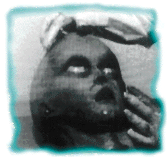

It all started with a photo of a big-headed alien with a weepy, yet almost shocked look on its face.
Posted to a newsgroup earlier this year, supposedly it was a snippet of top-secret footage from the infamous autopsy of an extraterrestrial whose ship had crashed in Roswell, N.M., in 1947. Alt.paranet.ufo went crazy. So did alt.paranet.skeptic. Web pages went up. Those in existence shifted their discussion to the autopsy film -- even before its late August showing on TV. By mid-October, you couldn't swing a dead alien without hitting someone talking about one.
Debate about the Roswell incident has gone on for years. But an open forum, like the Internet, for graphically dissecting such "evidence" is new. Previously, the debate would have festered among the fanatical and skeptical, with barbs bouncing back and forth in special-interest publications and supermarket tabloids and to the few who accessed Usenet groups in the scientific, research and academic communities.
Now the Roswell case and the alien autopsies are among the best documented controversies on the 'net. CompuServe has a special forum and archives on the paranormal. The entire 24-page summary of the Air Force investigation that explains away the wreckage as a crashed balloon from the top-secret is available. Both sides are presented in "The 50 Greatest Conspiracies of All Time" web site. Probably the most entertaining site debunking the film is the step-by-step "How to Make An Alien" site by special effects whiz Trey Stokes. After perusing through more than 300 pages from more than 20 sites and lurking on a half-dozen newsgroups on both sides IU discovered that all but the most die-hard Roswell believers -- and even a couple of those -- believe the film's a fake.
Most seem to agree it was an elaborate scheme to make some quick money. Others suspect a more sinister motive. One popular theory: The U. S. government, in a continuing attempt to cover up a crash at Roswell, developed the film with plans of debunking it as a hoax to knock the credibility of ufologists who have tried earnestly for years to find out what really happened in the remote New Mexico desert in 1947.
Consider this posting to alt.paranet.ufo in October: "The alien autopsy is a fake, sorry to say. But, you have to give the U. S. government credit for the effort they put in. Very good, high-quality stuff, if not convincing. But don't give up hope. It was all another attempt to break the psychological barrier they believe most people have about aliens."
UFO A-GO-GO
No one questions that something did crash in Roswell sometime in late June or early July 1947. A rancher found bits of an aluminum-type fabric, sticks, purplish tape with odd markings and a "black box"-type device. The government did report it had recovered a flying saucer at first. The next day, however, officials changed their story, saying it was just a weather balloon. No one said much about it until the late '70s, when rumors began to surface that the government had been covering up the recovery of an alien craft and four aliens at the site. But no one's had any proof and the government isn't budging from its story. Enter Ray Santilli. The British film producer claims that while he was searching for some old footage of Elvis Presley, he contacted a retired military cameraman in Los Angeles. The cameraman told Santilli that he had footage from three alien autopsies he had filmed, two in 1947 and another in 1949. (One of the aliens supposedly lived for two years under the government's watchful eye before it died.) Somehow, the government never got around to getting 22 reels of negatives documenting most of the second procedure, which now sat in the old man's attic. The cameraman, who is said to have died in early September, sold the 91 minutes of 16mm film for an undisclosed price, absolutely swearing to Santilli it was authentic.
Most of the 21 minutes released so far show two doctors in white bio-hazard outfits mulling about and cutting open a chubby, big-headed creature. They remove the creature's organs, saw open the brain and take off the black eye lids, revealing human-like eyeballs. Few purport to have seen the much-discussed "tent" scene, documenting more of the crash debris and said to be swarming with military personnel. Incredibly, President Harry S. Truman is said to be viewed in this as yet unreleased segment. The debris in the footage available conflicts with eyewitness reports of the materials recovered in Roswell in 1947.
All this was shown in late August, when Fox aired "Alien Autopsy:Fact or Fiction," a one-hour special on the footage. The network paid big bucks to get North American exclusive rights. On the program, a few minutes of the autopsy are shown, interspersed with interviews of people within the UFO, paranormal and medical fields along with Hollywood special-effect artists. They also interviewed witnesses from Roswell, who described materials found. According to Stokes and some 'net newsgroups, one L.A. special-effects artist told Fox producers he thought the film was faked and explained how it could have been done, but his interview was cut from the special.
The Fox program also ignored some inconsistencies, such as why no still photographer was present. That would be standard in such a military autopsy, some experts have noted in newsgroups.The most conclusive evidence the FOX special offered was that William Frakes of Star Trek: The Next Generation will do almost anything for a buck.
"Yeah, this is supposed to be a momentous event, the happening of a millennium and they're going to throw a guy a camera and say, 'Film what you can.' I don't think so," Stokes says. Neither does the Committee for the Scientific Investigation of Claims of the Paranormal, which plans to officially brand the autopsy film as a hoax in the December issue of The Skeptical Inquirer.
"It's tough being a skeptic these days," says Barry Karr, executive director of CSICOP, which investigates all kinds of unusual phenomena. "With so many more channels of communications opening, there's more competition to attract readers, viewers or listeners. And the paranormal sells. No doubt about it. Plus, for some people, it's hard to give up their beliefs even in the face of solid proof," Karr says. "But hey, I'm a Buffalo Bills fan. For years I thought they'd win a Super Bowl, but I had to give that up, too."
Karr points out inconsistencies such as the lack of military personnel on the scene, the neglect of proper pathological procedures, reassurances by special-effects experts that they could produce a similar model and plain common sense as the basis of his group's conclusion.
"The alien in the autopsy isn't even consistent with other reports about Roswell," Karr says. "Other reports say the aliens had four fingers, this one has six."
Regardless of whether the film is genuine or not, Santilli and his supporters have used the 'net and Web to their best advantage. They seem to have leaked "snippets" of film to newsgroups months before the film was set to release. A Web site specifically designed to sell the footage was established in the United Kingdom. Other UFO groups say they were encouraged to link to it, and many did. Santilli hosted chats on CompuServe's Encounters Forum all summer, creating a buzz about the August special and home video. A few minutes after the Fox program, viewers could turn off their TV and log into CompuServe for a moderated chat with Bob Shell, a consultant to the show, who as an independent photography expert, is convinced the film is genuine.
"Based on my investigation, I give a 95 percent scientific probability that the film was manufactured, exposed and processed in 1947. That's my professional opinion," Shell began the forum. People eagerly typed in questions for more than an hour. Asked why no one has seen the Truman footage, Shell replied: "It is on one of the rolls that are still stuck together and can't yet be unrolled."
UFO-O-RAMA
On the 'net, both serious researchers, hobbyists and the just-plain-curious have equal access to the debate. More importantly, they get a chance to buy the endless flow of tapes, books and other stuff related to ufology. The bandwidth is becoming the place for one-stop paranormal shopping. At Stanton T. Friedman's site, one of the few that seems to support the Roswell film as possibly authentic, you can buy his videos, Flying Saucers ARE Real, UFOs ARE Real and The UFO Controversy.
"Many of the persons making the biggest claims of ëalien bodies' make their living from the Roswell Incident," notes a military summary at http://www.inrs-ener. uquebec.ca/~paynter/paynter/afmogul.html. "While having a commercial interest in something does not automatically make it suspect, it does raise interesting questions related to authenticity."
 Santilli has sold the rights to the film in Britain, Brazil, Italy, Germany and Holland. Fox holds exclusive North American rights on the film. (Of course, if the footage is genuine, one would think the U.S. government would still hold the copyright, but that's another story.)
"The biggest single thing that says ëhoax' to me is how they just whale right on through the autopsy," Stokes says. "People have made excuses for this, saying this was the second alien autopsied. But even if it's the 10th one, scientists would still dissect it and that takes a little longer than an hour and a half. Think about that ice man they found in a glacier. They hadn't finished that autopsy after a whole year. And that's a human, they knew what they were going to find."
It's possible that the UFO community may come to the same conclusion soon. The entire Santilli film, including the "tent footage," is slated to be shown at the Fifth Annual International UFO Congress and Film Festival and Extra-Biological Entities Awards near Las Vegas Nov. 25-Dec. 3.
If the pro-UFO groups deem it a hoax, earnest Roswell investigators expect it to be a setback in getting to the truth at what happened at a dusty, isolated ranch in July 1947. To help push sales of the video, the Roswell Centre site offers a copy of a top-secret document to President-elect Eisenhower from the "Majestic 12" project as proof that an alien craft did crash in Roswell. Karr says that even pro-UFO groups believe that the MJ-12 document is not genuine.
Despite his mocking of the alien in the autopsy, Stokes believes that the Roswell incident still should be investigated. "These are people who believe there is really something to be investigated," he says. "They are trying to be serious about it, but when something like this comes out, it muddies the water for what they are trying to do."
Karr believes that even with the film debunked, the issue of Roswell will not go away; believers have remained steadfast in the face of two exhaustive government reports stating nothing happened.
That's understandable when you consider that in the recent past, Americans have walked on the moon; 100 years ago that was thought impossible. The government who put him there covered up extensive radiation testing on humans, nuclear experiments and the Watergate burglary. There will always be a segment of society attracted to the lure of an enigma hidden within a complex mixture of intrigue and the unexplained.
"People love a conspiracy theory. It plays upon their natural distrust of the government. But what's weird is how things have changed. Back in the 1970s, with The Night Stalker, there was no question that this kind of stuff was not real," Karr says. "Now, with The X-Files, people really think that all this stuff is really true. That the government would cover it up seems plausible." Hmmmm. Maybe the autopsy filmmakers should have gotten Agent Scully to do the job.